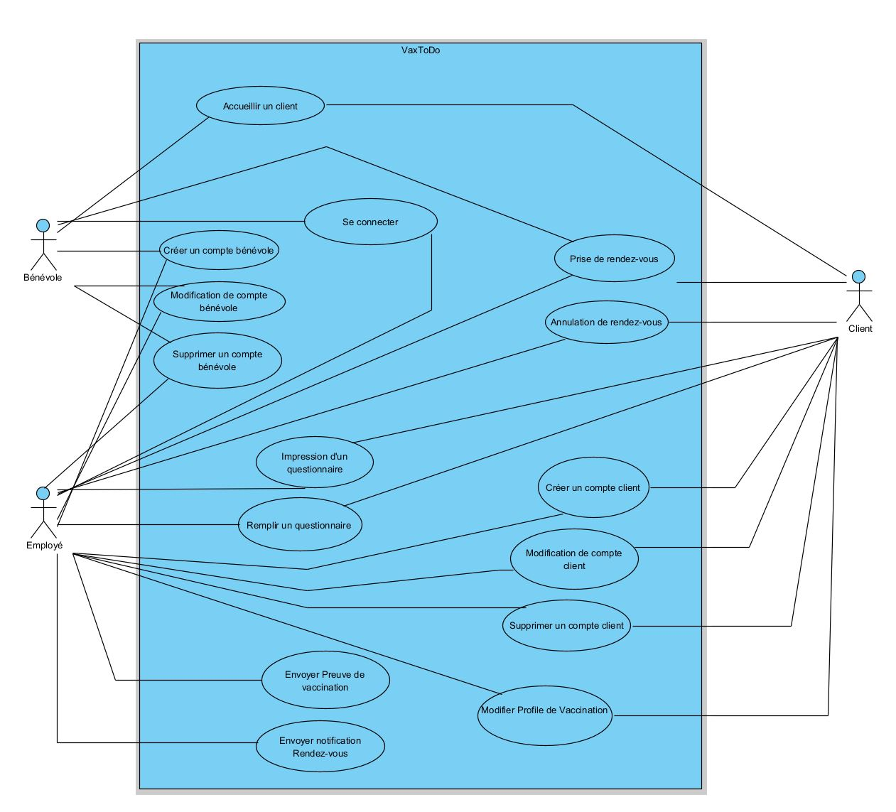
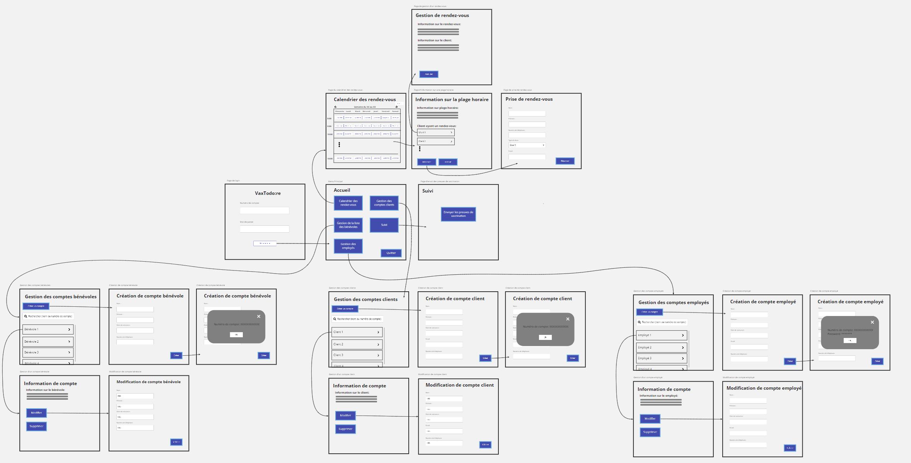
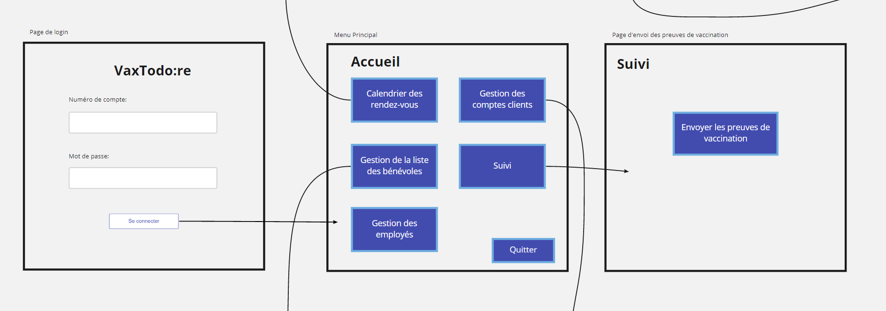
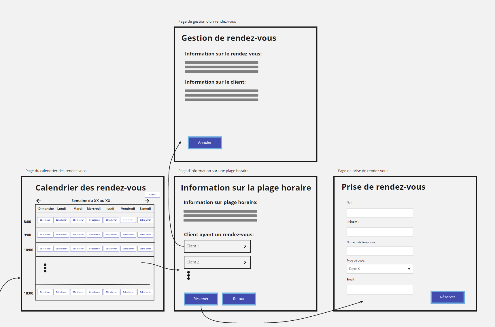
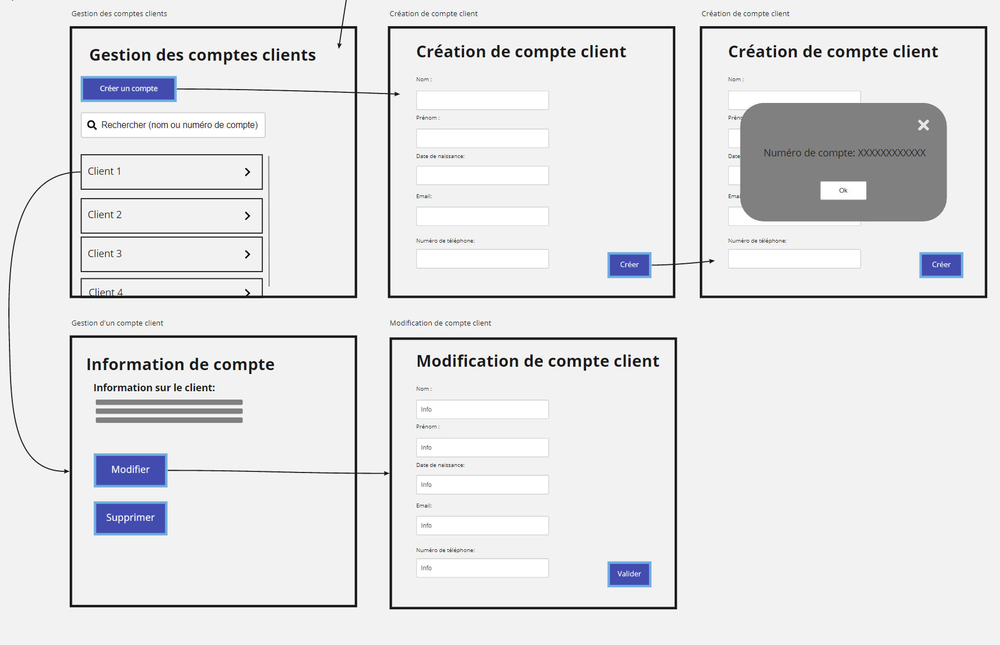
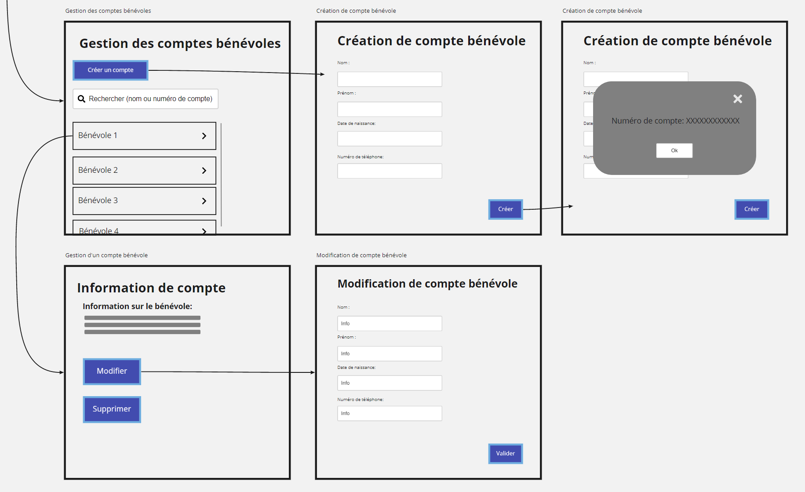

Plannification
Description brève du domaine et du problème
Le but de ce projet est de créer un système d'information VaxTodo:re qui sera utilisé uniquement par les employés. L'objectif de ce projet est de permettre à Goodpeople de mieux gérer les rendez-vous et faciliter le suivi sur toute question reliée à la preuve de vaccination et prise de rendez-vous pour la deuxième dose.
Présentation de l'échéancier et la distribution des tâches
Réponses du client à nos questions
- Processus: Le processus commence par la vérification du rendez-vous par le bénévole. Si le client à un rendez-vous, alors la personne se dirige dans la file d’attente avec rendez-vous, sinon le client se dirige vers la file sans rendez-vous. La file d'attente est gérée en premier arrivé, premier servi, en priorisant les visites planifiées. Par la suite, la personne se dirige vers un employé pour confirmer son rendez-vous, confirmer le but de la visite et pour récupérer les informations nécessaires et remplit un questionnaire. En cas de première dose, on demande au client s’il veut faire la première dose pour en prendre un rendez-vous en lui choisissant une date d’un délai de minimum un mois. Enfin, l’employé donne un billet au visiteur et attend son tour pour voir un professionnel pour se faire vacciner.
- Participants: Les participants impliqués dans le processus de vaccination sont une équipe composée d’employés et de bénévoles.
- Nombre d’employés et plage horaire: Le local se limite à 40 personnes, ne comptant pas l’équipe et les professionnels de la santé. La prise de rendez-vous peut être effectuée pour un maximum de 2 personnes et une plage horaire est limitée à 15 rendez-vous
- Manipulation du système: Le système d'information VaxTodo:re sera manipulé uniquement par les employés. L'employé peut accéder à la liste des rendez-vous, la liste des bénévoles et des comptes visiteurs pour en ajouter, modifier ou supprimer.
- Détails compte visiteur: Le compte du visiteur aura un numéro unique à douze chiffres et sera rattaché à une adresse courriel unique. Il présentera aussi les informations personnelles du visiteur: nom, prénom, date de naissance, adresse et numéro de téléphone.
- Création de comptes: Le client ne peut pas créer un compte chez lui donc afin d'éviter d'avoir des comptes fantômes, le client doit se rendre sur place pour créer un compte.
- Prise de rendez-vous à l’avance: Le client peut prendre un rendez-vous au minimum 72 heures à l'avance.
- Se présenter sans rendez-vous: Le bénévole vérifie la quantité de rendez-vous prévus dans un délai d'une heure et l'ajoute au nombre de visiteurs présents. Si la somme est inférieure à la capacité du local, son nom est ajouté à la plage horaire correspondant à l'heure de la visite. Sinon, son nom est ajouté à la prochaine plage horaire disponible.
Présentation des hypothèses
Après avoir fait les échanges avec GoodPeople, nous avons pu émettre des hypothèses que nous avons
suivi pour rédiger le reste du rapport.
On a supposé que:
- Si on ne trouve pas le compte client lorsqu’on fait la recherche à l’aide de son nom et son numéro de compte, alors le compte n’existe pas.
- C’est le client qui décide de supprimer son compte et non l’employé.
- L’agent se déconnecte à la fin de la journée, donc on n’ajoutera pas la déconnexion du système dans nos scénarios.
Compréhension du domaine
Après de nombreuses rencontres et une familiarisation avec l'activité VaxTodo, nous avons préparé un glossaire rassemblant les termes et expressions clés caractérisant l'environnement.
Glossaire
| Serveur: | Base de données qui contient toutes les données sur les profils des membres et les réservations. |
| L'agent: | Il interagit avec la base de données pour la gestion des clients et des rendez-vous (employé et bénévole). |
| Compte bénévole: | Compte dans lequel sont entrées les informations minimales (Noms, adresse mail, domicile, numéro de téléphone) concernant un bénévole dans le but de l’identifier. |
| Client: | Un patient qui désire se faire vacciner. |
| Informations personnelles: | Nom, prénom, email et/ou numéro de téléphone et/ou date de naissance du client. |
| Numéro de compte: | Numéro unique à douze chiffres liés au compte du client. |
| Rendez-vous: | Moment où le client a pris une réservation pour se faire vacciner. |
| Système : | L'application VaxTodo qui communique avec la base de données. |
| Plage horaire: | Période de temps limite à l'intérieur de laquelle un client subit son processus de vaccination (débute lorsque le client se présente à la réception et se termine après avoir fait son vaccin.) |
| Bénévole: | Personne qui s'est portée volontaire pour aider GoodPeople à accueillir les clients. |
| Professionnel: | Membre d'un service de santé autorisé à administrer ou superviser la séance de vaccination. |
| Employé: | Membre du personnel GoodPeople (avec un numéro de compte pour se connecter au logiciel). |
| Local/réception : | Emplacement réservé par GoodPeople pour le processus de vaccination. |
| Calendrier des rendez-vous: | Emploi de temps disponible sur lequel sont affichées les différentes plages horaires de vaccinations. |
| Visite spontanée: | Visite pour cadre de vaccination faite sur place par un client n'ayant pas pris de rendez-vous ou perdu son rendez-vous. |
| Règles sanitaires: | Mesures à respecter pour éviter ou réduire la propagation du virus. |
| Dose: | Vaccin administré au client (1ere et 2e dose existante pour chaque rendez-vous) après un intervalle de temps entre les deux. |
| Preuve de Vaccination : | Document PDF/word présentant son nom, sa date de naissance, un code QR et la liste des vaccins administrés. |
| Profil de vaccination: | Page résumée des rendez-vous, du nombre de doses et le type de vaccin qu'un client a déjà reçu. |
| Éligible: | Toute personne répondant aux critères qui sont d'être âgée d'au moins 18 ans, pas encore "totalement" vaccinée, ayant une carte d'assurance maladie en sa possession ou un numéro d'identification valide. |
| Code d'identification: | Identifiant à 9 chiffre permettant à un agent de se connecter au système. |
| Mot de passe: | Mot de passe composé d'au moins 8 caractères contenant au moins 1 chiffre, 1 majuscule, 1 minuscule et 1 caractère spécial permettant à un agent de se connecter au système. |
Modélisation du domaine
Cas d'utilisation
Scénarios
CU: Prise de rendez-vous
But: Prendre un rendez vous pour faire le vaccin
Acteurs: Client (principal), Agent (secondaire)
Scénario principal:
- Le client appelle un agent pour prendre un rendez-vous.
- L’agent demande la raison de l'appel.
- Le client explique qu’il veut prendre un rendez-vous.
- Le client fournit sa préférence de date et horaire.
- L’agent accède à la page du calendrier des rendez-vous.
- L’agent vérifie les plages horaires disponibles.
- Le Système confirme la disponibilité choisie.
- L’agent demande les informations personnelles du client.
- Le client fournit les informations à l’agent.
- L’agent vérifie les informations du client.
- L’agent ajoute le rendez-vous dans le système.
- Le système confirme le rendez-vous.
- L’agent communique le numéro de réservation au client.
- Le système envoie ses informations par courriel au client.
- L’appel se termine.
Scénario alternatif:
5.a. La date n’est pas disponible,
5.a.1 L’agent indique au client que la date n’est pas disponible.
5.a.2 Le client fournit une nouvelle date et horaire.
5.a.3 Retour à l’étape 5.
CU: Annulation de Rendez-Vous.
But: Supprimer un rendez-vous relié à un client pour le retirer du calendrier.
Acteurs: Client (principal), L’employé (secondaire).
Précondition: - Le client doit déjà avoir une réservation enregistrée dans son compte, un employé
est disponible pour répondre à l’appel et l’employé est déjà connecté.
Scénario principal:
- Le client appelle un employé pour annuler un rendez-vous.
- L’employé demande la raison de l'appel.
- Le client explique qu’il veut annuler un rendez-vous.
- L’employé accède au calendrier des rendez-vous.
- L’employé demande le numero de son rendez-vous.
- Le client communique les informations à l’employé.
- L’employé trouve le rendez-vous du client dans le calendrier.
- L’employé supprime le rendez-vous du client.
- Le système confirme la suppression du rendez-vous.
- L’employé indique au client que son rendez-vous a été annulé.
- L’appel se termine.
CU: Créer un compte client.
But: Avoir un compte dans le système.
Acteurs: Client (Principal), L'employé (Secondaire)
Précondition: L'employé est déjà connecté.
Scénario principal:
- Le client se présente à la réception/accueil.
- L'employé accède à la page gestion des comptes clients.
- L'employé clique sur "Créer un compte".
- L'employé demande les informations personnelles du client.
- Le client communique les informations à l’employé.
- L'employé rentre les informations requise du client dans le système.
- Le système valide les informations.
- Le système confirme la création du compte et affiche le numéro de compte unique du client.
- Le système envoie un courriel de confirmation contenant le numéro de compte.
- L'employé communique le numéro de compte au client.
Scénario alternatif:
5.a. Le client n’est pas éligible à s’inscrire.
5.a.1 Le scénario se termine.
7.a Le système rejette certaines informations mal entrées.
7.a.1 Le système demande à l’employé de rentrée les informations de nouveau.
7.a.2 Le scénario reprend à l’étape 6.
CU: Modification de compte client.
But: Pouvoir changer les données/informations reliées à un client spécifique.
Acteurs: Client (Principal), L'employé (Secondaire)
Précondition: - Le client doit avoir un compte VaxTodo:re et l’employé est déjà connecté.
Scénario principal:
- L'employé accède à la page recherche des clients.
- L'employé recherche le profil du client à l'aide du nom ou du numéro de compte du client dans la barre de recherche.
- L'employé trouve le profil du client.
- Le client communique les informations à modifier à l’employé.
- L'employé apporte les modifications nécessaires aux endroits correspondants. (changement d'adresse, de mail, numéro de téléphone...)
- L'employé valide avec le client si les informations sont correctes.
- L'employé enregistre et valide les informations entrées.
- Le système valide les informations.
- Le système confirme la modification des informations.
- L'employé ferme le profil du client concerné.
Scénario alternatif:
3.a L'employé ne trouve pas le profil du client.
3.a.1 L'employé informe le client qu’il n’a pas de compte .
3.a.2 L'employé informe le client qu’il doit se rendre sur place pour faire son compte.
3.a.3 Le scénario se termine.
CU: Supprimer le compte du client.
But: Supprimer un compte ainsi que toutes ses informations.
Acteurs: Le client (Principal), L'employé (Secondaire)
Précondition: - Le client doit avoir un compte VaxTodo:re et l’employé est déjà connecté.
Scénario principal:
- Le client indique à l’employé qu’il désire supprimer son compte.
- L'employé accède à la page recherche des clients.
- Le client communique son numéro de compte ou son nom à l’employé.
- L'employé recherche le profil du client à l'aide du nom ou du numéro de compte du client dans la barre de recherche.
- L'employé clique sur le profil du client correspondant.
- L'employé vérifie qu'il s'agit du bon client.
- L'employé supprime le compte du client.
- L'employé confirme la suppression du compte. ("OUI")
- Le système confirme la suppression du compte.
CU: Se connecter
But: Se connecter au système.
Acteur: L’agent (Principal).
Précondition: Avoir un code d’identification et un mot de passe valide.
Scénario principal:
- L’agent ouvre le système.
- L’agent entre son code d’identification.
- L’agent entre son mot de passe.
- L’agent clique sur “Se connecter” pour accéder au système.
- Le système confirme la connexion.
Scénario alternatif:
5.a. La connexion échoue.
5.a.1 Retour à l'étape 2.
CU: Accueillir un Client
But: Accueillir un client à la réception du local de GoodPeople et mieux l’orienter.
Acteurs: Client (Principal), Bénévole (Secondaire).
Pré-condition: Le bénévole est déjà connecté.
Scénario principal:
- Le client se présente à l’accueil du centre Good People.
- Le client est reçu par un bénévole.
- Le bénévole demande le numéro de réservation du client et son nom.
- Le client communique son numéro de réservation du client et son nom au bénévole.
- Le bénévole vérifie dans le système si le client a une réservation à la plage horaire désignée.
- Le système confirme le numéro de réservation (Réservation existante).
- Le bénévole oriente le client vers la file d’attente des visites planifiées.
- Le bénévole ferme la plage horaire pour ce client.
Scénario alternatif:
3.a Le client n’a pas de numéro de réservation.
3.a.1 Le bénévole vérifie les plages horaires disponibles pour les visites spontanées
dans le système.
3.a.2 Le système affiche les plages disponibles.
3.a.3 Le bénévole choisit une qui correspond aux exigences du client.
3.a.4 Le système confirme le choix.
3.a.5 Le bénévole dirige le client vers la file des visites spontanées.
3.a.6 Retour à l'étape 8.
CU: Remplir un questionnaire.
But: Remplir le questionnaire qui permettra de poursuivre le processus de vaccination de façon fluide.
Acteurs: Le client (Principal), Employé (Secondaire)
Précondition: le client doit avoir sa carte d’assurance maladie valide et en sa possession et l’employé est déjà connecté.
Scénario principal:
- Le client se présente en face de l'employé.
- L’employé demande au client son numéro de compte et la carte d’assurance maladie du client.
- Le client fournit son numéro de compte.
- Le client fournit sa carte d’assurance maladie.
- L’employé vérifie la validité de la carte d’assurance maladie.
- L’employé trouve le profil du client.
- Le système confirme les informations.
- L’employé accède à la page du formulaire.
- L’employé commence à poser les questions au client pour remplir le formulaire convenablement.
- L’employé termine de remplir le questionnaire avec le client.
- L’employé imprime le formulaire (CU “Impression de Formulaire”).
Scénario alternatif:
3.a la carte d’assurance maladie du client n’est pas valide.
3.a.1 l’employé annule la visite actuelle du client.
3.a.2 l’employé invite le client à prendre un nouveau rendez-vous et renouveler
la carte d’assurance maladie avant de se représenter.
3.a.3 l’employé finalise la nouvelle prise de rendez-vous avec le client.
3.a.4 l’employé ferme le profil du client.
3.a.5 Fin de scénario.
CU: Impression du questionnaire
But: Imprimer le formulaire d’information regardant le client qui sera utilisé par le professionnel de la santé.
Acteurs: Le client (Principal) , l’employé (Secondaire).
Précondition:Le formulaire doit avoir été rempli au préalable par l’employé et le client et signé par l’employé.
Scénario principal:
- L’employé lance le processus d’impression à travers le système.
- Le système confirme l’impression du questionnaire (« OUI » ).
- Le système imprime le questionnaire.
- L’employé signe le questionnaire.
- L’employé donne le questionnaire au client.
- L’employé dirige le client vers la file d’attente des professionnels de la santé.
Scénario alternatif (exception):
3.a Le système n’imprime pas le questionnaire (manque de papier / imprimante en panne).
3.a.1 Le système indique que le questionnaire n’a pas pu être imprimé.
3.a.2 Le scénario se termine.
CU: Créer un compte pour un bénévole.
But: Avoir un compte pour un bénévole précis sur le système.
Acteurs: Bénévole (Principal), employé (Secondaire)
Précondition : L’employé est déjà connecté.
Scénario principal:
- Le bénévole se présente à la réception
- L’employé accède à la page gestion de la liste des bénévoles.
- L’employé clique sur "Créer un compte".
- L’employé demande les informations personnelles du bénévole.
- Le bénévole communique ses informations personnelles à l’employé.
- L’employé rentre les informations requises du bénévole dans le système.
- Le système valide les informations.
- Le système confirme la création du compte et affiche le numéro de compte unique du bénévole.
- Le système envoie un courriel de confirmation contenant le numéro de compte.
- L’employé communique le numéro de compte au bénévole.
Scénario alternatif:
5.a Le bénévole n’est pas éligible à s’inscrire.
5.a.1 Le scénario se termine.
7.a Le système rejette certaines informations mal entrées.
7.a.1 Le système demande à l’agent de rentrée les informations de nouveau.
7.a.2 Le scénario reprend à l’étape 5.
CU: Modification de compte bénévole
But: Pouvoir changer les données/informations reliées à un bénévole.
Acteurs: bénévole (Principal), employé (Secondaire)
Précondition: : - le bénévole doit avoir ses informations dans son compte bénévole .
Scénario principal:
- L’employé accède à la page recherche des bénévoles.
- L’employé recherche le profil du bénévole à l'aide du nom ou du numéro de compte bénévole dans la barre de recherche.
- L’employé trouve le profil du bénévole.
- Le bénévole communique les informations à modifier à l’employé.
- L’employé apporte les modifications nécessaires aux endroits correspondants (changement d’adresse, de mail, numéro de téléphone…).
- L’employé valide avec le bénévole si les informations sont correctes.
- L’employé enregistre et valide les informations entrées
- Le système confirme la modification des informations.
- L’employé ferme le profil du bénévole concerné
Scénario alternatif:
3.a L’agent ne trouve pas le profil du bénévole.
3.a.1 L’agent informe le bénévole qu’il n’a pas de compte .
3.a.2 L’agent crée un nouveau compte au bénévole.
3.a.3 Le scénario se termine.
CU: Supprimer le compte d'un bénévole.
But: Supprimer un compte ainsi que toutes ses informations.
Acteurs: Le bénévole (Principal), l’employé (secondaire)
Précondition: - le bénévole doit avoir ses informations dans son compte.
Scénario principal:
- Le bénévole indique à l’employé qu’il désire supprimer son compte.
- L’employé accède à la page recherche des bénévoles.
- Le bénévole communique son numéro de compte ou son nom à l’employé.
- L’employé recherche le profil du bénévole à l'aide du nom ou du numéro de compte du bénévole dans la barre de recherche.
- L’employé clique sur le profil du bénévole correspondant et l’ouvre.
- L’employé vérifie qu’il s’agit du bon bénévole.
- L’employé supprime le compte du bénévole.
- L’employé confirme la suppression du compte (« OUI » ).
- Le système confirme la suppression du compte.
CU: Envoyer preuve de vaccination
But : envoyer à chaque visiteur sa preuve de vaccination
Acteur: Employé (principal).
Précondition : Le client a fait le vaccin, l’employé est déjà connecté au système.
Scénario principal:
- L’employé récupère le formulaire complété.
- L’employé vérifie que le client a été vacciné.
- L’employé ajoute les informations dans le profil de vaccination.
- Le système valide les informations.
- L’employé envoie un courriel contenant la preuve sous format de PDF.
- Le système confirme l’envoi du courriel.
Scénario alternatif:
2.a Le client n’ est pas vacciné.
2.a.1 Fin du scénario.
CU: Modifier profil de vaccination
But: Modifier les données entrées dans un profil de vaccination déjà existant.
Acteurs: Client (Principal), L’employé (Secondaire).
Précondition : Avoir déjà des informations dans son profil de vaccination et l’employé est déjà connecté au système.
Scénario principal:
- L’employé accède à la page de Gestion du Profile de vaccination.
- L’employé recherche le client dont il faut modifier le profil.
- L’employé demande les informations du client (Nom, Prénom, Numéro de compte).
- L’employé retrouve le compte correspondant.
- L’employé sélectionne “Profil de vaccination”.
- L’employé choisit l’option “Modification” une fois dans le profil.
- L’employé met à jour les informations concernant le client (Date de vaccination, Type de dose, Nom du vaccin...).
- Le système vérifie si les données entrées sont correctes.
- L’employé enregistre les informations.
- L’employé ferme le profil de vaccination du client.
CU : Envoyer notification rendez-vous
But: rappeler à chacun des clients son rendez-vous.
Acteur: Employé (principal).
Scénario principal:
- L’employé récupère la liste des visites planifiées pour les prochaines 48 heures du système.
- Le système affiche la liste des visites.
- L'employé choisit le profil du client.
- L’employé envoie une notification par courriel.
- Le système confirme l’envoi du courriel.
Analyse des besoins
Notre analyse préliminaire nous a permis de déterminer les besoins fonctionnelles du système ainsi que les besoins non-fonctionnelles. De plus, on a pu déterminer certains risques reliés à ce projet, ce qui va nous aider plus tard à classer les besoins et les risques en ordre de priorité.
Risques
- La perte ou le vol des informations personnelles des clients, des bénévoles et des employés est considéré comme un risque vraiment sévère. Donc le système doit respecter les trois principes fondamentaux: la confidentialité, l’intégrité et la disponibilité.
- C’est important que le système soit fiable, puisqu’on veut que les changements de données (ajouter, modifier ou supprimer) soient enregistrés dans la base de données. Un système qui n’est pas fiable causera beaucoup de problèmes avec les visiteurs. Par exemple, les visiteurs qui ont déjà pris un rendez-vous et leurs noms n’est pas dans le système, ou ajouter un visiteur spontané qui lui prendra la place à un visiteur avec rendez-vous, etc..
- Un risque qu’on peut considérer c’est le budget alloué au projet VaxTodo:re. Si le client décide de faire beaucoup de changements au système, cela implique un travail additionnel de l’équipe et la dépense de plus de ressources, ce qui causera l’annulation du projet.
Exigences fonctionnelles
- La gestion de rendez-vous est la priorité primaire de GoodPeople. Puisqu'il avait de la difficulté à respecter les dates fixées avec les clients et à respecter les délais.
- La gestion de compte est aussi importante, pour enregistrer, modifier ou supprimer les informations personnelles du client dans la base de données. La gestion des comptes sera vraiment utile pour les prochaines visites dans le cas ou le client veut prendre un prochain rendez-vous.
- Faire le suivi des client est nécessaire pour envoyer les preuves de vaccination et confirmer les prochains rendez-vous des clients.
- Une base de données pour stocker, modifier ou supprimer des informations est aussi importante pour avoir accès aux données. Cela va permettre, par exemple de confirmer un rendez-vous d'un client avec le système.
Exigences non-fonctionnelles
- Les informations personnelles des clients doivent être gardées de façon sécuritaire pour éviter le vol ou la perte de celle-ci.
- Le design de l'application est une contrainte de fiabilité. Sans le design, le système peut fonctionner. Cependant, son utilisation sera plus difficile.
- Rechercher les comptes déjà existants pour vérifier le profil est une contrainte de performance et de temps de réponse pour sauver du temps à l'employé et au client. Par exemple, le fait d'utiliser la barre de recherche au lieu de parcourir la liste un client à la fois. Ce qui sauvera beaucoup de temps.
- Le code doit être facilement modifiable pour permettre la maintenabilité et l'adaptabilité du système. Ce qui va permettre de réduire grandement la durée du travail et les coûts impliqués.
Prototype
-

Voici une image qui montre la globalité du prototype et les connexions entre les pages.
-

Ces pages permettent à l'employé de se connecter et d'accèder au menu principal.
La page de suivi permet d'envoyer les preuves de vaccination au client qui se sont fait vacciné durant la journée.
-

Ces pages permettent la gestion des rendez-vous.
C'est-à-dire, de consulter les différentes plages horaires, d'ajouter un rendez-vous et d'annuler un rendez-vous.
-

Ces pages permettent la gestion des comptes clients. C'est à dire, de rechercher, créer, modifier ou supprimer un client.
-

Ces pages permettent la gestion des comptes bénévoles. C'est à dire, de rechercher, créer, modifier ou supprimer un bénévole.
-

Ces pages permettent la gestion des comptes employés. C'est à dire, de rechercher, créer, modifier ou supprimer un employé.
Analyse
Besoins matériels
Partie à informatiser
Nous allons utiliser le mode interactif puisque le logiciel ne sera pas utilisé par beaucoup de personnes et que le budget de GoodPeople est limité. (Petit volume, ordinateur sur place)
Matériel nécessaire
- Plusieurs ordinateurs personnels avec le système d'exploitation (windows, ~ 250GB).
- Les ordinateurs personnels devront être équipés d’un clavier, d’une souris et d’un écran.
- Un disque durs externe qui servira de base de données ~ 1TB.
- Un modem pour avoir accès à internet.
- Une ou plusieurs imprimantes.
Solutions de stockage
- Avoir un ordinateur branché à un disque dur externe qui va servir uniquement à gérer la base de données. Les fichiers qui y seront stockés seront des CSV avec des virgules pour séparer les colonnes et des sauts de ligne pour séparer chaque élément.
- Utiliser un service de stockage en ligne.
Conception physiques et conceptuelles
- L’utilisation de l’imprimante et du logiciel dépend du nombre de visiteurs reçus par jour.
- Les questionnaires sont imprimés sur une seule page de format A4.
- La taille d’un dossier d’un client ~ 100 octets.
- La taille d’un dossier d’un bénévole ~ 130 octets.
- La taille d’un dossier d’un profil de vaccination ~ 130 octets.
- ~6MB d’espace nécessaire pour le système.
- Pour le système, nous avons décidé que nous allions utiliser le langage de programmation Java.
- Dans le cas où il y aurait le budget nécessaire pour améliorer l'interface, il nous sera facile de changer l’interface pour une interface graphique avec WindowsBuilder.
Diagrammes d'activités
Diagramme de Classe
Justification
Nous avons décidé de divisé la gestion des différentes entité en plusieurs controleur pour permettre une meilleur cohésion. De cette façon, les éléments ne sont pas tous réuni dans le même module. Cela permet aussi un faible couplage avec la classe Menu qui n'a pas trop a se soucié des éléments des controleurs. Grâce à cette décomposition, cela nous a donc permis de nous concentrer sur 1 module à la fois et de les rendre plus facilement modifiable au besoins sans que ça n'affecte les autres modules.